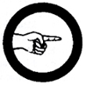

Pathfinding
- Demonstrate a general knowledge of the area within a three-kilometer radius of your residence or the local Scout office so as to be able to guide people at any time to points within the area.
- Know the location and general population of five neighboring barangays, towns, or cities selected by your Counselor. Demonstrate directions for reaching them - by foot, bus, or any other means of transportation, the comparative distances, and possible the fare from your locality.
- If in the country, demonstrate giving directions to a stranger in the place - how to reach the house of the Barangay Chairman, places where food supplies may be purchased, several places of local interest such as a waterfall, a cold or hot spring, a former battleground, or any other place selected by your Counselor.
- Demonstrate how to direct a person from your home to a gasoline or fire station, or a general auto repair or vulcanizing shop.
- Give the telephone number, if any, and direction for reaching the nearest police station, municipal building, the nearest doctor's clinic and hospital, the steamship or railroad station office, or the jeepney or bus terminal.
- Know something of the history of your community and the locations of its principal places of interest and public buildings, as well as the names of the town's chief dignitaries.
- Submit a scaled map not necessarily drawn by yourself upon which you have presently indicated as much as possible the above required information.
|